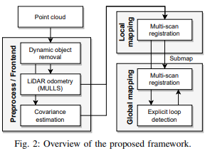
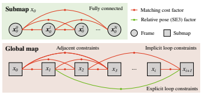
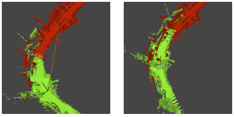
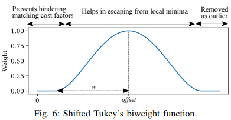
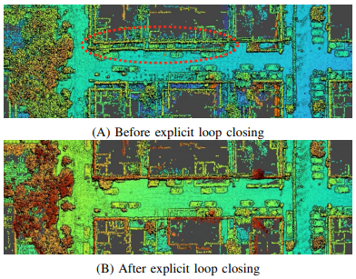

[2021 RAL] Globally Consistent 3D LiDAR Mapping with GPU-accelerated GICP Matching Cost Factors
2021 RAL paper on LiDAR SLAM using VGICP on GPU
Researchers at AIST, Japan. First Author: Kenji Koide

- A. Global matching cost minimization을 통해 아주 작은 overlap의 frame간의 constraint를 적용할 수 있다.
- B. GPU를 이용함으로서 어마어마한 양의 Factor들과 Factor Graph를 처리할 수 있다.
기존 Lidar SLAM의 한계점
Pose Graph Optimization
기존의 Lidar based odometry의 경우 Pose graph 형식으로 만들어 point cloud matching에 대해 하나의 Gaussian distribution으로 정의하여 optimization을 진행함. Scan matching은 다양한 local minima가 존재하여 하나의 Gaussian distribution으로 정의할 수 없음.
대부분 constant한 covariance matrix, weight-based covariance matrix, 또는 Hessian-based close form으로 covariance matrix를 사용하나, 이는 “cost function deviation caused by data association changes”를 고려하지 않아 너무 optimistic한 결과를 나타냄. (여기서 optimistic이란, 실제 uncertainty보다 더 작다는 의미?) 이러한 잘못된 pose constraint modeling은 long trajectory에 대해 잘못된 결과를 야기시킬 수 있음.
Monte-Carlo 기반 방법도 있으나 computationally expensive하다. Data-driven 방법을 통한 covariance matrix 추정 기법도 있음. 하지만 현존하는 대부분의 방법이 앞서 말한 constant, weight-based, 또는 Hessian-based 방법을 사용함.
Bundle Alignment
주로 Visual SLAM기법에 사용됨 근데 computationally 비쌈. VSLAM에서 two track으로 real-time local과 low frequency global BA로 주로 진행되며 GPU기반으로 feasibility를 보인 바 있음. Lidar에서는 진행된 바가 별로 없음.
Global Matching Cost Minimization
그래프 기반으로 frame간 matching cost를 최소화한는 기법이 이용된 바 있음 (2D). 이를 발전시켜 loop closure event에서 실행함으로서 global optimization 빈도를 줄이면서 3D로 확장시킨 바 있음. Global optimization할 시 모든 factor를 업데이트 함으로서 global 및 local consistency를 유지함. 하지만 computationally expensive하여 real-time application 및 large-scale SLAM에는 부적절함.
Volumetric mapping 기법으로 Euclidean signed distance field (ESDF)를 사용해 local submap간의 registration error를 고려한 방법이 있으나, computationally expensive하고 random subsed of residuals만 사용하고 SE3 pose constraint의 지원이 있어야 해서 한계가 있다.
Deformation Graph
Elastic Fusion과 같이 deformation graph를 사용하는 방법들이 있으나, 이들은 주어진 정보를 다 사용하지 않으며 global consistancy를 방해할 수 있다. (odometry 정보 같은 것을 사용하지 않는다는 뜻인듯? Pose graph와 다르게 완전 map centric이니까.. 해당 논문을 다시 읽어봐야 할듯)
제안하는 방법
Real-time and globally consistent 3D Lidar mapping frame using GPU
GPU 기반 전체 map에 대해 Generalized ICP (GICP)로 활용한 Voxel-based data association을 통한 multi-scan registeration
- 아주 작은 overlap에 대해서도 constraint를 부과할 수 있다. (2.5%)
- GPU 사용을 통해 많은 양의 Factor를 생성할 수 있다.
제안하는 방법은 Local 및 Global mapping module로 구성되어있다.

둘다 voxel-based overlap metric을 사용하여 GPU를 통해 빠른 연산이 가능하다.
- Point cloud가 들어오면 RandLA-Net를 이용해 dynamic object를 삭제하고
- Odometry estimation을 MULLS을 이용해 초기값을 추정한다.
- 그동안 각 point의 covariance matrix를 kn point들을 통해 구한다는데 voxel에 적용하려고 그런건가?
- 처리된 point cloud는 local mapping module에 들어가 약 10~20개의 frame들이 matching 되어 local submap을 형성한다.
- Submap들은 다시 Global mapping 단계 input으로 들어가 voxelized GICP matching cost factor로 factor graph를 형성한다.

위의 그림과 같이 local mapping과 global mapping module이 형성된다. Global mapping module에서 matching cost factor가 local solution에 갇히는 것을 방지하기 위해 explicit한 loop closure constraint를 사용한다. (여기서는 ScanContext).
Local mapping에서는 fully connected factor graph를 형성하며, global mapping에서는 가장 마지막 submap과 특정 값 이상의 overlap이 존재하는 기존의 submap간의 constraint를 형성한다.
(여기선 이걸 implicit loop closure라고 말하는 듯;
- explicit loop closure = ScanContext와 같이 query Lidar key의 value와 비교하여 비슷하면 매칭하는 loop closure,
- implicit loop closure = 계산된 또는 측정된 odometry 정보와 overlapping 정보를 이용한 loop closure)
Voxelized GICP Matching Cost Factors
주어진 sensor pose와 point cloud pair에 대해서 다음과 같이 주어진 objective function을 최소화 함으로써 추정된다.
Sensor pose : \(\mathcal{T} = \left\{ \mathbf{T}_0, \dots, \mathbf{T}_t \right\}\)
Point cloud pair : \(\mathcal{F}^{M}\) 으로 matching pair의 indices 집합 \((i, j)\)
cost function : \(f^{M}(\mathcal{F}^{M}, \mathcal{T}) = \sum_{(i,j) \in \mathcal{F}^{M}} e^{M}(\mathcal{P}_i, \mathcal{P}_j, \mathbf{T}_i, \mathbf{T}_j)\)
여기서 matching cost function \(e\)는 Voxelized GICP에 맞게 설정된다. GCIP error는 point with covariance를 사용하게 되는데, transformation \(\mathbf{T}\)를 가진 \(\mathbf{p}_k\)와 \(\mathbf{p}_k'\) 의 point pair에 대한 error값은 다음과 같이 정의된다.
Point with covariance : \(\mathbf{p} = (\mathbf{\mu}_k, \mathbf{C}_k)\)
GICP error : \(e^{GICP}(\mathbf{p}_k, \mathbf{T}) = \mathbf{d}_k^{T}(\mathbf{C}_k' + \mathbf{T}\mathbf{C}_k \mathbf{T}^T)^{-1}\mathbf{d}_k\) (Mahalanobis distance를 이용하는듯)
여기서 \(\mathbf{d}_k = \mathbf{\mu}_{k}' - \mathbf{T}\mathbf{\mu}_k\) 로 \(k'\) 좌표계에서 계산한 두 점간의 벡터 차이이다.
기존 GICP에서는 이 corresponding point 쌍을 찾는 방법이 KD Tree를 이용하여 찾는데, 이는 GPU 연산에 적합하지 않다 (Conditional branches를 사용하기 때문 : KD Tree와 GPU에 대해 좀 더 알아봐야 이해할 것 같다..).
VGICP에서는 voxel-based data association을 사용하는데 여기서 voxel은 point cloud를 voxel 안에 mean과 covariance로 계산하여 나타낸다.
여기서 covariance는 Normalized Distributions Transform(NDT)와는 다른 방법을 사용하는데, NDT가 point set에서 voxel distribution을 계산하는 반면 VGICP는 point distribution을 하나의 voxel distribution으로 aggregate 한다. (잘 이해가 안됨)
Voxel로 만듦으로서 GICP에서 사용된 KD-Tree와 다르게 Voxel Position기반으로 주변의 Voxel에 대한 search로 corresponding point를 찾는다는 것 같다. (이를 GPU computing에 어떻게 넣고 하는지는 설명되어있지 않다.)
VGICP matching cost function은 다음과 같이 된다.
cost function : \(e^{M}(\mathcal{P}_i, \mathcal{P}_j, \mathbf{T}_i, \mathbf{T}_j) = \sum_{\mathbf{p}_k \in \mathcal{P}_i} e^{GCIP}(\mathbf{p}_k, \mathbf{T}_{ij})\)
Factor node를 구성하기 위해선 error값 뿐만 아니라 각 Factor에 대한 Jacobian을 계산해야 되는데 여기서는 Hessian에 대한 설명이 나와있다. (응?)
Transformation에 대한 미분값을 다음과 같이 정의한다.
For \(\mathbf{T_i}\) : \(\mathbf{A}_k = \partial \mathbf{e}_k / \partial \mathbf{T}_k\)
For \(\mathbf{T_j}\) : \(\mathbf{B}_k = \partial \mathbf{e}_k / \partial \mathbf{T}_j\)
여기서 \(\mathbf{e}_k\) 는 \(\mathbf{d}_k\) 와 비슷한 \(\mathbf{e}_k = \mathbf{\mu}_{k}' - \mathbf{T}_{ij}\mathbf{\mu}_k\) 로 \(j\) coordinate system에서 본 point mean 값의 차이 벡터이다.
Hessian값은 앞서 구한 미분값들과 \(j\) coordinate system에서 구한 covariance matrix로 계산된다. (coordiante frame간 covariance matrix 참조)
\(\mathbf{H}_{ii}\) \(= \sum_{k}^{N} \mathbf{A}_{k}^{T} \mathbf{\Omega}_{k} \mathbf{A}_{k}\)
\(\mathbf{H}_{ij}\) \(= \sum_{k}^{N} \mathbf{A}_{k}^{T} \mathbf{\Omega}_{k} \mathbf{B}_{k}\)
\(\mathbf{H}_{jj}\) \(= \sum_{k}^{N} \mathbf{B}_{k}^{T} \mathbf{\Omega}_{k} \mathbf{B}_{k}\)
여기서 \(\mathbf{\Omega}\)는 앞서 말한 covariance matrix인데 이는 \(\mathbf{\Omega}_k = \mathbf{C}_{k}' + \mathbf{T}_{ij} \mathbf{C}_{k} \mathbf{T}_{ij}^{T}\) 로 정의된다. 즉 \(\mathbf{e}_k\)의 covariance matrix이다.
다음으로 coefficient vector라는 것을 정의하는데.. 어디에 쓰이는지 잘 모르겠다. Factor graph 논문을 다시 봐야하나
\(\mathbf{b}_i\) \(= \sum_{k}^{N} \mathbf{A}_{k}^{T} \mathbf{\Omega}_{k} \mathbf{e}_{k}\)
\(\mathbf{b}_j\) \(= \sum_{k}^{N} \mathbf{B}_{k}^{T} \mathbf{\Omega}_{k} \mathbf{e}_{k}\)
매 optimization iteration마다 \(\mathbf{e}^M\)을 다시 계산하기에 \(\mathbf{H}_{*}\)와 \(\mathbf{b}_{*}\)는 다시 계산된다 (GPU 사용).
Overlap metric
Local mapping과 global mapping에서 overlap을 계산하는데 있어 query voxel과 target point cloud간의 overlap 정도는 다음과 같이 binary한 cost를 이용하여 계산한다.
\(s(\mathbf{p}_k, \mathcal{P}_j)\) \(= \begin{cases} 1, & \text{if } \mathbf{p}_k \text{ fell in a voxel of } \mathcal{P}_j\\ 0, & \text{otherwise} \end{cases}\)
\(\text{overlap}(\mathcal{P}_i, \mathcal{P}_j)\) \(= \sum_{k}^{N} s(\mathbf{p}_k, \mathcal{P}_j) / N\)
즉 \(\mathcal{P}_i\)의 각 점들이 \(\mathcal{P}_j\)로 만들어진 voxel map에 해당되는 정도로 overlap을 계산한다. (이는 GPU로 약 5만개의 점들에 대해 0.1.ms이하로 계산된다고 한다.)
기존의 경우는 time interval이나 sensor displacement로 가까이 있으면 overlap일 것이라고 예측하는 것보다 유용하며, bounding-box overlap metric보다 더 정확하다. (drift가 심할 경우에는 bbox가 더 나을 것 같은데..)
Local Mapping
Overlap이 95% 이상인 경우 displacement가 없다고 가정하여 frame skip을 하며, 그 미만인 경우 voxel map을 resolution \(r^L\)로 만들어 (여기서 \(L\)은 Local인듯, Local과 Global map resolution을 따로 사용하는 모양이다.) 이 pair를 submap factor graph에 넣는다 (Factor graph에 넣는 방식은 여기서 나와있는 방법으로..)
Submap의 첫 frame과 마지막(가장 최근의) frame의 overlap이 10% 이하인 경우나 Frame 갯수가 특정 threshold (\(N_{max}^L\))을 넘어갈 경우 Submap의 factor graph를 optimize하며 모든 frame들을 하나의 submap으로 merge한다.
그 후 resolution \(r^G\)인 voxel map submap을 기반으로 생성되어 global mapping module로 들어가게 된다.
Global Mapping
앞서 언급된 Local Mapping을 통해 얻어진 새로운 submap이 들어올 때 마다 기존에 생성된 submap들과의 overlap matric을 계산해 특정값(여기선 무려 2.5%!!) 이상일 경우 constraint를 적용한다. 이는 densely connected factor graph를 형성한다; scan matching이 실패하는 부분도 모두 matching cost factor를 형성하여 deficient constraint를 형성할 수 있으나, 전체 시스템이 다른 factor로 인해 well constrained 되어 있기에 큰 영향을 주지 않는다. (이부분이 완벽히 이해가 되지는 않는데.. matching cost factor는 말 그대로 상태에 대한 어떤 cost를 반환하는 반면 scan matching은 잘못되었든 잘 되었든 하나의 값을 그냥 던져줘서 문제가 될 수 있다고 생각됨..!)

이러한 matching cost factor는 local solution에 갇힐 수 있어 explicit 한 loop closure detector를 사용하여 SE3 relative pose constraint를 더하며, objective function은 다음과 같다.
\(f^{G}(\mathcal{T})\) \(= f^M(\mathcal{F}_G^M, \mathcal{T}) + f^{L}(\mathcal{F}_G^L, \mathcal{T})\)
여기서 \(f^M(\mathcal{F}_G^M, \mathcal{T})\)는 local mapping과 비슷하게 submap간 cost function이고
\(f^{L}(\mathcal{F}^L, \mathcal{T})\) \(= \sum_{(i,j)\in\mathcal{F}^L} \rho \left( {\lVert log(\hat{\mathbf{T}}_{ij}^{-1} \mathbf{T}_i^{-1}\mathbf{T}_{j}) \rVert}^{2} \right)\)
\(\mathcal{F}_G^L\)은 loop detection 찾아낸 submap index pair들, \(\hat{\mathbf{T}}_{ij}\) 은 relative pose measurement (loop detection으로 찾은건지 아니면 다른건지는 명시되어있지 않으나 \(\hat{}\)이 들어간 것으로 보아 loop detection이지 않을까 싶다), 그리고 \(\rho\)는 robust kernel이라고 한다.

Robust kernel (\(\rho\))에 대해서는 위와 같은 shifted Tukey’s robust kernel로 정의되는데, current estimate가 loop constraint를 만족시키는 경우 (relative pose로 비교하는듯) matching cost function을 방해할 수 있기 때문에 (둘의 sum으로 이루어졌기에 이 사이 조절이 힘든가? 암튼) loop closure constraint를 최소화하고, 너무 차이가 클 경우 outlier로 제외시킨다(loop closure의 실패로 간주). 이를 식으로 나타내면 다음과 같다.
\(\text{tukey}(x,w)\) \(= max(0, (1-x^2 / w)^2)\)
\(\text{shifted_tukey}(x,w,offset)\) \(=\text{tukey}(\lVert x-offset \rVert, w)\)

Implementation Details
Factor graph optimization을 위해 GTSAM의 Levenberg-Marquardt optimizer를 사용하였다. GPU 관련해서는 계산식들에 대해(주로 VGICP Matching Factor들) 적용하였다고 한다. (Factor graph가 dense한것과 관련이 있나? 아마 각 factor 계산이 어마어마하니까 dense해서 계산량이 많아져 GPU로 효과를 본게 아니라 각 factor 계산을 GPU로 하기에 효과를 봤다고 보는게 맞는건가.. 모르겠다)
Evaluation
다른 SOTA algorithm들과 비교를 해놨는데, 이부분도 자세히 읽어보고 서술할 예정.
TBW